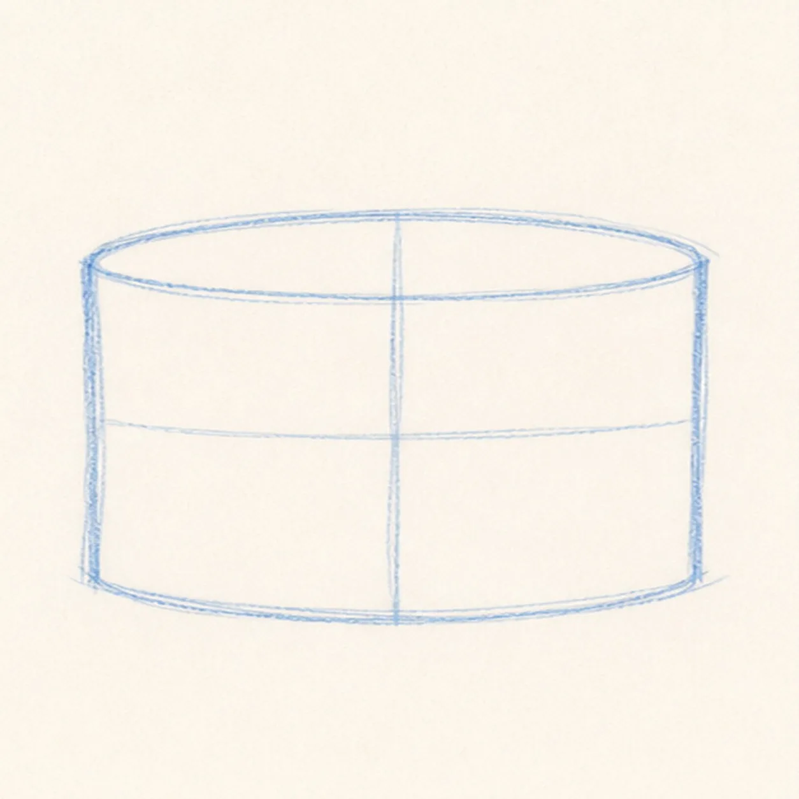
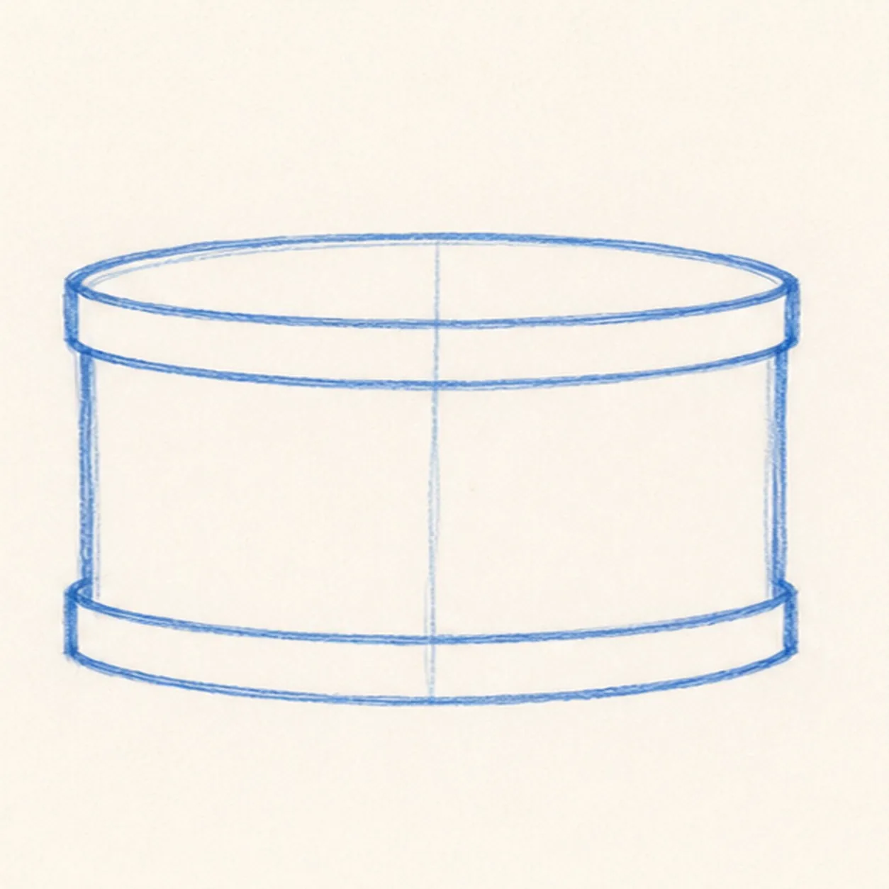
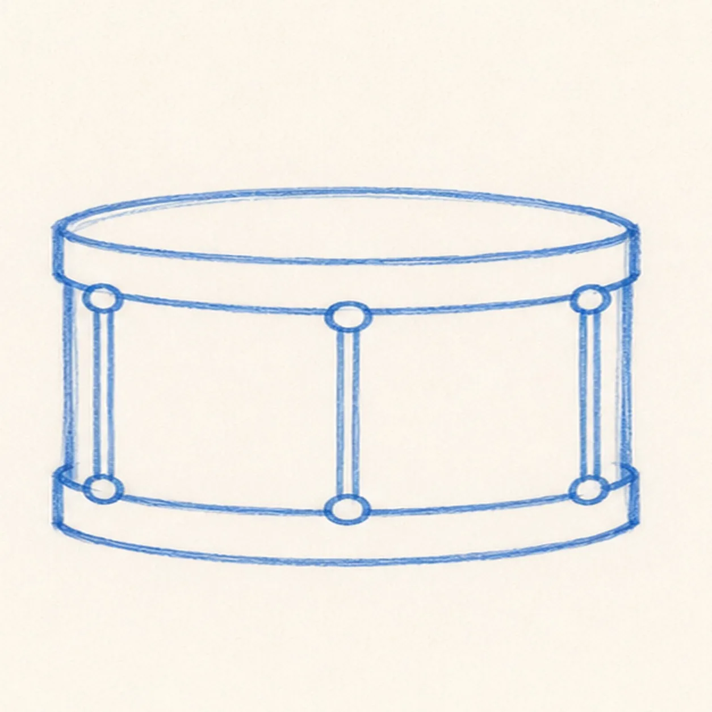
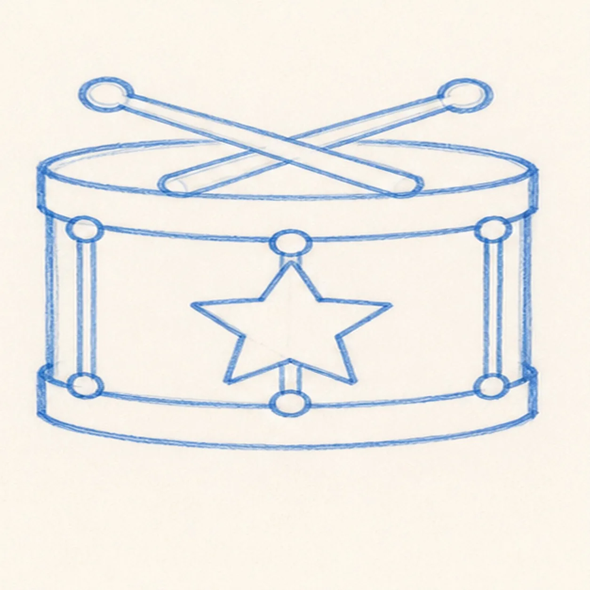
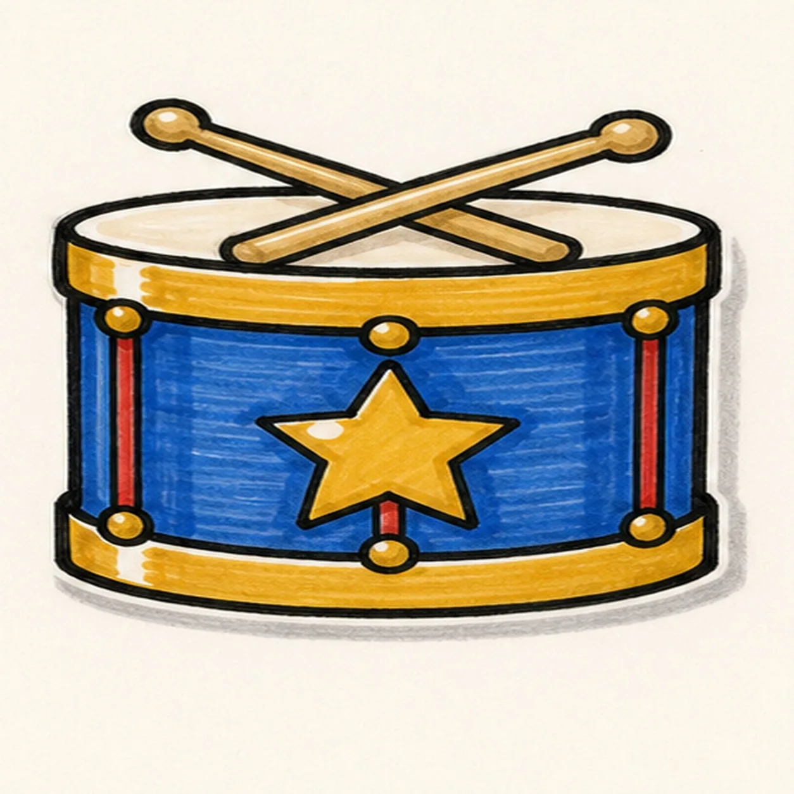

Felt-tip marker mode
Let's doodle a parade drum
Treat this as one playful practice round: sketch the idea loosely, simplify the shapes, then commit with confident marker outlines and bright fills.
-
01

Block the drum body
Draw a short drum cylinder with a broad top ellipse, straight side edges, and a curved lower edge.
Doodle tip: Keep the drum squat and wide. A tall tube will not feel as much like a marching drum.
-
02

Band the rims
Add thick top and bottom rim bands that follow the curve of the drum body.
Doodle tip: Curve the bands with the ellipse. Straight bands flatten the drum.
-
03

Mark straps and lugs
Place round lugs around the rims and connect them with simple vertical straps.
Doodle tip: Use fewer, bigger lugs. Tiny dots disappear once the marker color goes in.
-
04

Cross the sticks
Add two rounded drumsticks crossing over the top rim, then draw a big star badge on the front.
Doodle tip: Let the sticks sit above the top ellipse. That overlap makes them feel like real objects on the drum.
-
05

Fill the parade colors
Fill the shell blue, the rims and star gold, the straps red, the sticks tan, then leave shine gaps and add a sticker shadow.
Doodle tip: Color in broad strokes. The doodle should look bold from across the room.
-
06

Make the drum march
Reinforce the existing black outlines, deepen the marker colors, sharpen the highlights, and darken the sticker shadow.
Doodle tip: Stop before adding words, flags, or extra confetti. The star, sticks, and bright rims already carry the parade energy.